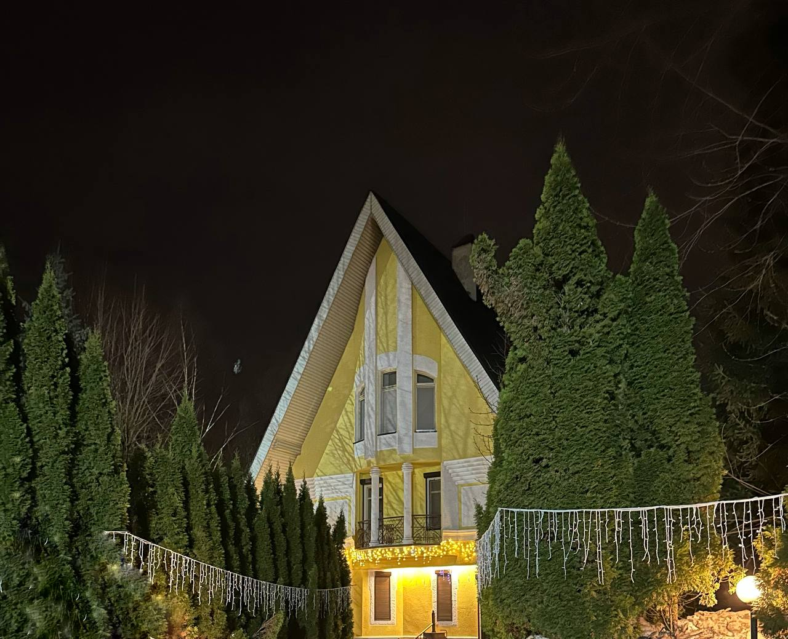

НАШИ ЛЮБИМЫЕ ДРУЗЬЯ!
Приглашаем Вас на нашу загородную тусовку
в честь нашей свадьбы
в честь нашей свадьбы
15 июня 2024
ГЛАВНЫЕ СОБЫТИЯ ДНЯ
12:00
СБОР
ГОСТЕЙ
ГОСТЕЙ
Приятное общение под игристое и легкие закуски
13:00
НАЧАЛО
МЕРОПРИЯТИЯ
МЕРОПРИЯТИЯ
Начало увлекательных приключений, активности от жениха и
невесты, интеллектуальные и не очень игры
20:00
ПРАЗДНИЧНЫЙ
УЖИН
УЖИН
Время вкусной еды в уютной атмосфере теплого июньского вечера
ДРЕСС-КОД
Рекомендуем взять два комлекта одежды.
Первый - для незабываемых приключений на траве, в воде и в воздухе
Второй - для праздничного вечера. Нам будет приятно, если поддержите общую атмосферу нашего мероприятия.
Первый - для незабываемых приключений на траве, в воде и в воздухе
Второй - для праздничного вечера. Нам будет приятно, если поддержите общую атмосферу нашего мероприятия.
ЛОКАЦИЯ
Мероприятие будет проходить в загородном доме по адресу:
Московская область, Наро-Фоминский район, деревня Новоглаголево, Южная улица, 1
Московская область, Наро-Фоминский район, деревня Новоглаголево, Южная улица, 1

При возникновении сложностей можете воспользоваться картой с точными координатами